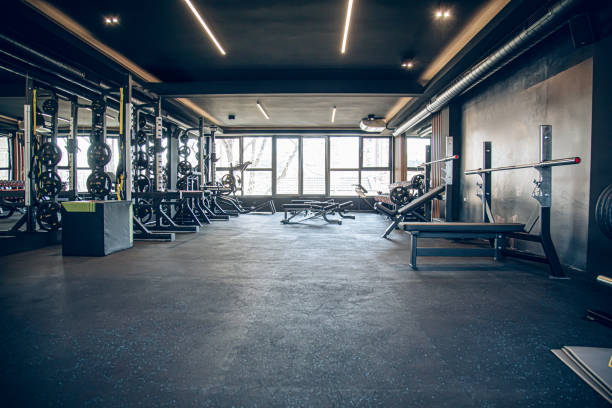

GymLog je web aplikacija za brzo zapisivanje treninga u teretani i praćenje napretka kroz vrijeme.
Unesi vježbe, serije, ponavljanja i kilaže, pa usporedi rezultate iz tjedna u tjedan i vidi što stvarno radi.
Umjesto da pamtiš “otprilike”, sve je zapisano na jednom mjestu pa lakše planiraš sljedeći trening i mjeriš napredak.
Cilj je jednostavan: manje nagađanja, više stvarnih podataka i jasniji rezultat.
